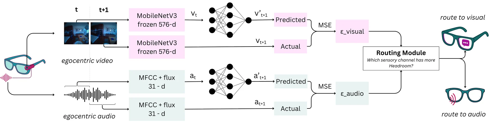

UIST 2026, paper and demo
HeadRoom
A lightweight, edge-deployable pipeline for adaptive notification routing
HeadRoom predicts the next moment of egocentric video and audio. When a stream is hard to predict, that sense is probably busy. It routes each notification to the channel with more room. In a controlled study with 25 participants, routing to the more available channel reduced response time under high perceptual load compared with routing to the less available one.
- Runs in real time on wearable and mobile edge hardware
- Distinguished Poster Award, Meta’s Research Summit for Egocentric Intelligence 2026
